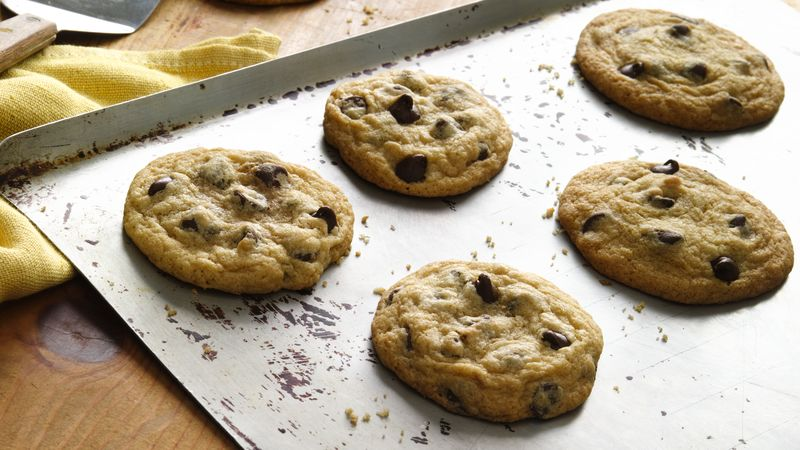
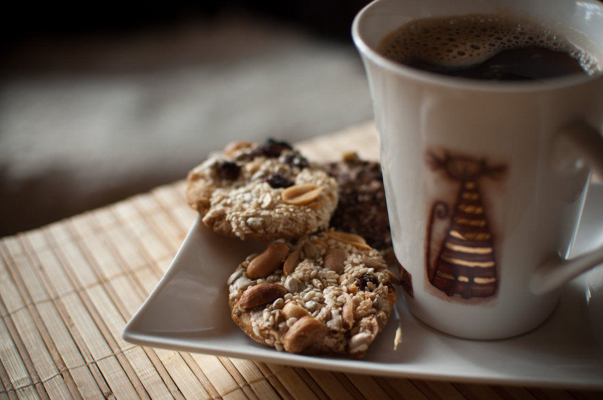
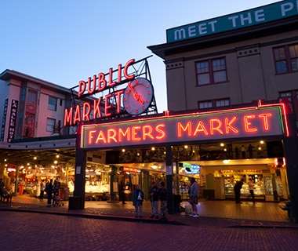
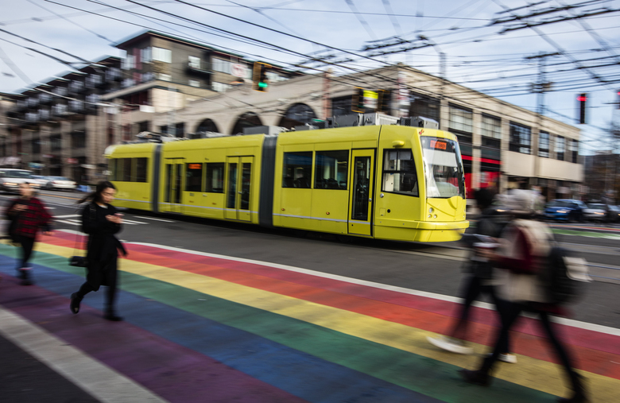
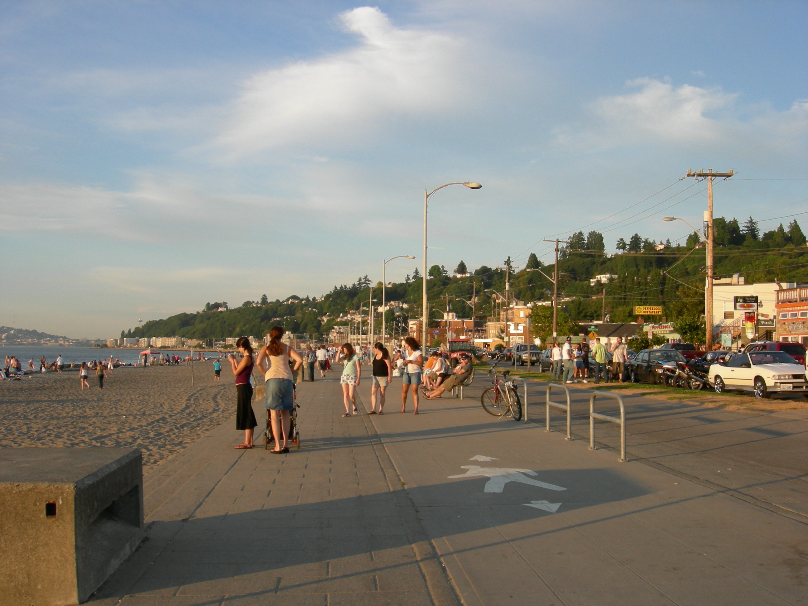

Today's Selection
- Classic Chocolate Chip
- Peanut Butter and Fig
- Frosty Snickerdoodles

Locations
- Pike Place Market
- 
- Putting what matters up front. Most cookies sold, obviously a tourist favorite
Address: 123 1st Ave S.
Phone: (206)867-5309 - Seattle Center
- Iconic space needle and soon the revitalized Key Arena area will drive more business to the area.
Address: 123 1st Ave S.
Phone: (206)867-5309 - Capitol Hill
- 
- Coolest spot in Seattle, resonates with those interested in pursuing the alt experience
Address: 123 1st Ave S.
Phone: (206)867-5309 - Alki Beach
- 
- Alki is the spot to be in the summer, rotate this accordingly
Address: 123 1st Ave S.
Phone: (206)867-5309 - SeaTac Airport
- Decent revenue stream, not sure how much emphasis should be put on connecting our brand to SEA
Address: 123 1st Ave S.
Phone: (206)867-5309
A Fish Tale
- Born and raised in the Pacific Northwest, Pat grew up eating fresh caught salmon his entire life. Pat loved salmon. And Pat loved cookies! One day, Pat went to his family and asked them to try his new cookie creation, and they loved it! It was only after he had explained that he had ground in fresh salmon that they spit it out! And then immediately started eating them again. That was good enough for Pat and the next week, he bought his first cookie cart and started baking his famous Salmon Cookies."